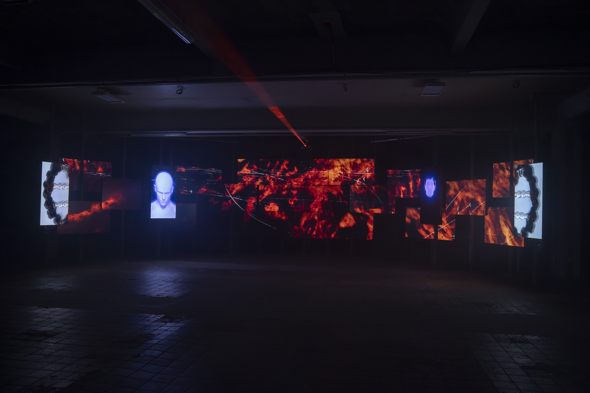
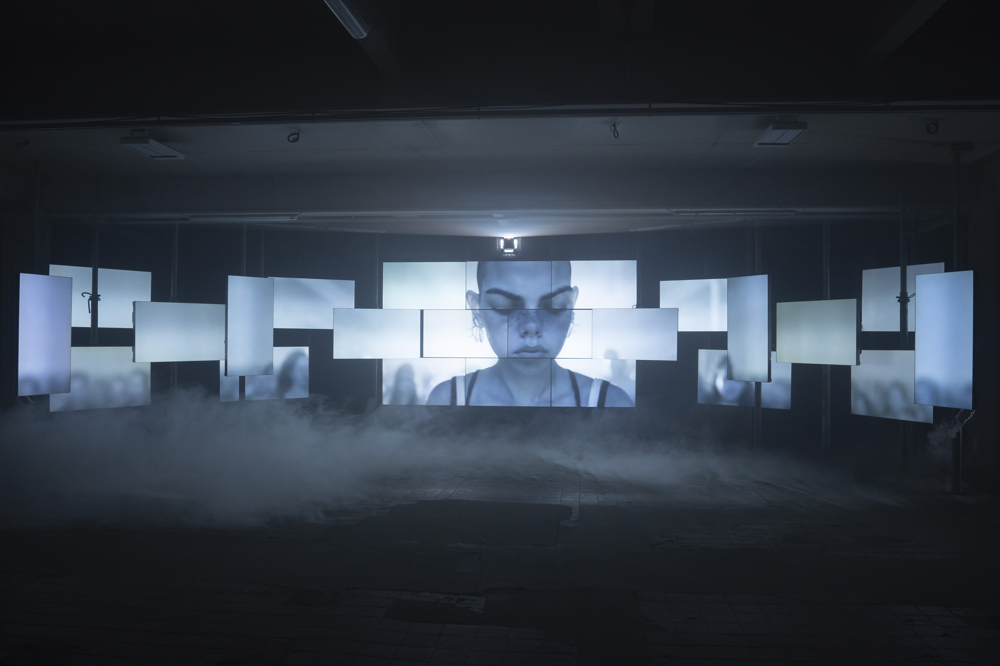
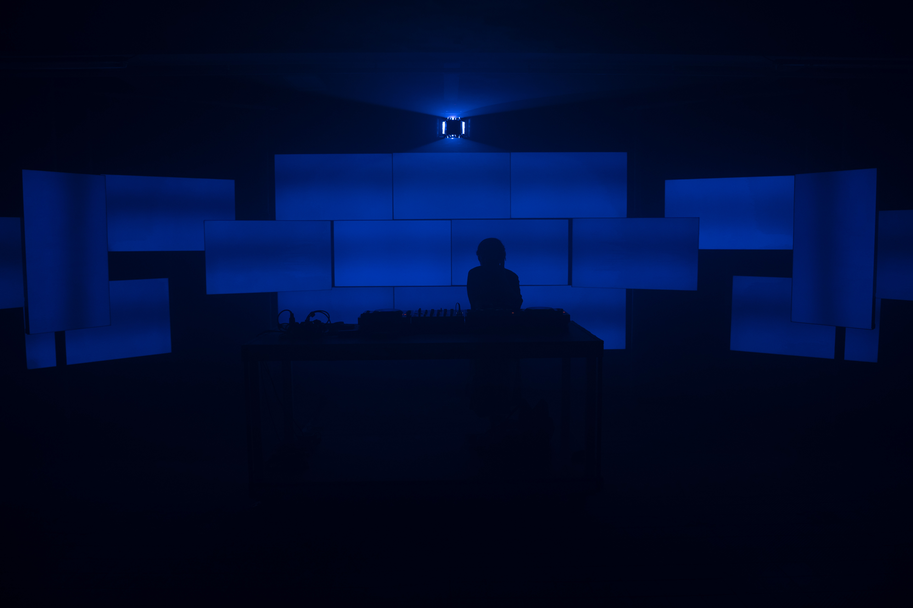
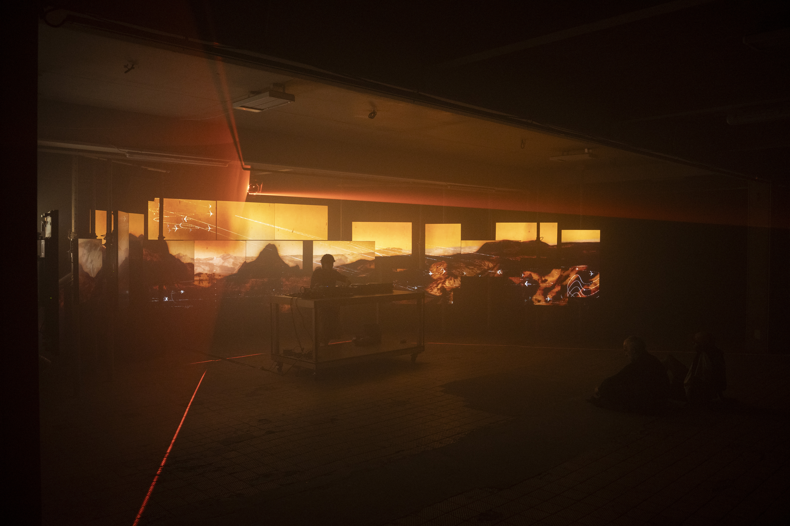
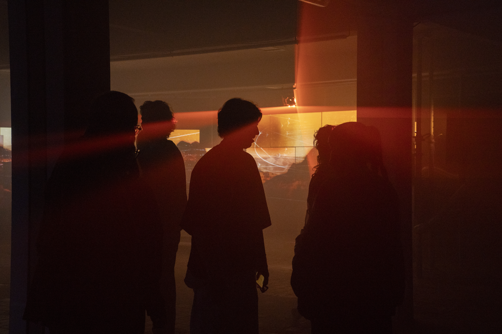
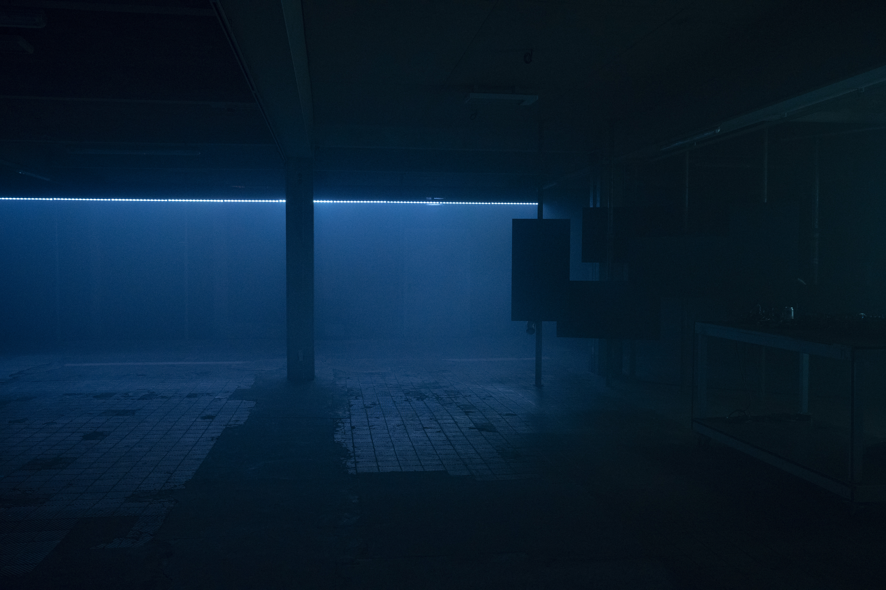
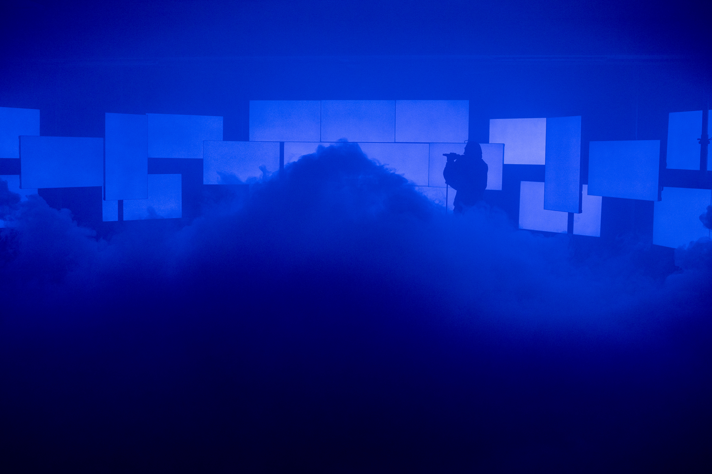

THE FLIP: Transmoderna
Light design and programming for THE FLIP by art collective Transmoderna at Kühlhaus Berlin. Designed to Transmoderna’s narrative film, following its storyline as an immersive experience, and built as a timecode show triggered and played back from TouchDesigner.
Photography: Tobias Wendt






